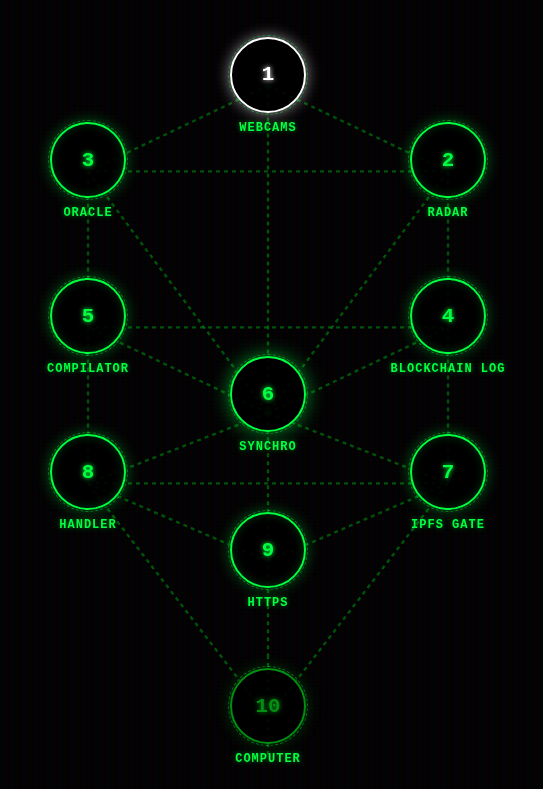

Context: The 24 Elders Oracle operates as an active component within a broader, living network organism known as the Big Tree Universal Harmonic System. Positioned at the upper sphere of the Tree of Life, the Oracle is driven by Module 3.

The underlying ecosystem relies on three core modules:
Together, this pipeline powers the Xylem Protocol and the daily 24-Hour Oracle.
High-Precision Time Synchronization: The system's central server is hosted in Zurich, Switzerland. It is directly synchronized via physical cabling to a Stratum-1 time server, which anchors directly to a Stratum-0 atomic clock (see the Heartbeat Server Status).
Hourly Watchdog Routine: Triggered precisely on the hour by the server's synchronized clock, a cron-based Watchdog process queries the latest frame output from Module 2, the Smart Clock Engine.
Throughout the 24-hour cycle, all blockchain transaction logs are concatenated alongside the 24 hourly CIDs. At midnight (00:00 UTC), as the daily ledger seals, a custom compiler parses the daily state into a unified log file (inspected via Xylem Daily Logs).
Immediately following log compilation, an automated GitHub Action Routine securely connects to the Zurich server to extract the Oracle journal and execute a single, consolidated publication to the Nostr network.